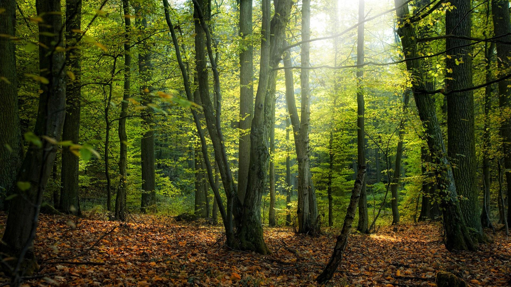
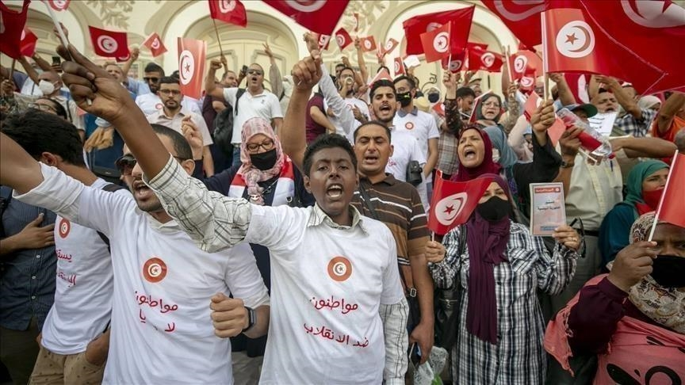

القصة 1
قصة حول حماية الغابة من التلوث والحرائق وقطع الأشجار.

القصة 2
قصة حول حماية البحر والسلاحف من التلوث البلاستيكي.

القصة 3
قصة حول أهمية الماء وضرورة ترشيد استهلاكه.

القصة 4
قصة حول المواطنة البيئية: فرز النفايات، الاقتصاد في الماء والطاقة، وحماية المحيط.